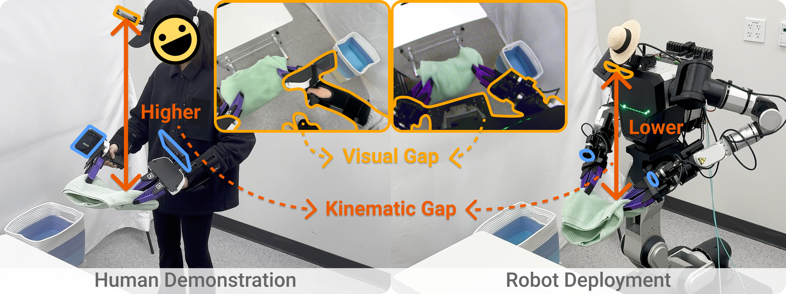
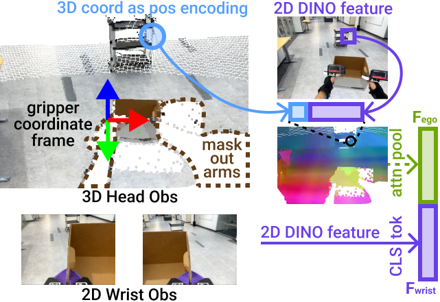
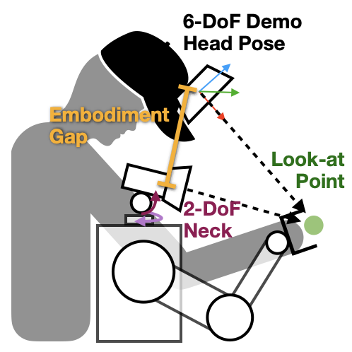
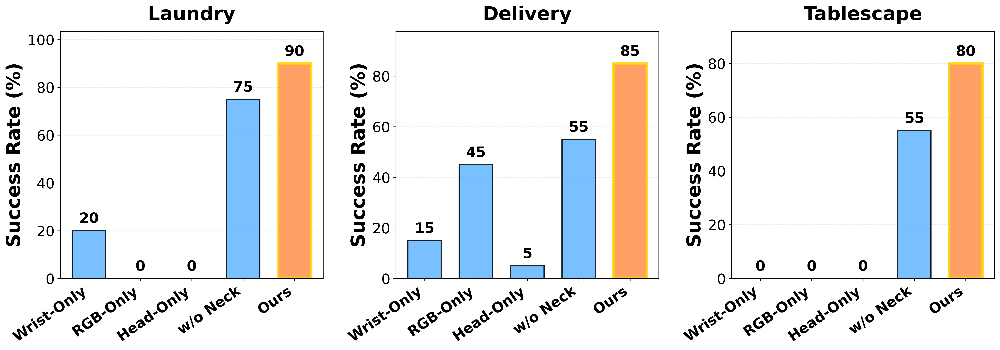

HoMMI
Learning Whole-Body Mobile Manipulation from Human Demonstrations
Xiaomeng Xu1,2 Jisang Park1 Han Zhang1 Eric Cousineau2 Aditya Bhat2 Jose Barreiros2 Dian Wang1 Jeannette Bohg1 Shuran Song1
1Stanford University 2Toyota Research Institute
Robotics: Science and Systems (RSS 2026)
1x
Long-horizon navigation
1x
Bimanual/whole-body coordination
1x
Active perception
We learn whole-body mobile manipulation capabilities directly from human demonstrations, without ANY teleoperation data
1x
1x
1x
Abstract: We present Whole-Body Mobile Manipulation Interface (HoMMI), a data collection and policy learning framework that learns whole-body mobile manipulation directly from robot-free human demonstrations. We augment UMI interfaces with egocentric sensing to capture the global context required for mobile manipulation, enabling portable, robot-free, and scalable data collection. However, naively incorporating egocentric sensing introduces a larger human-to-robot embodiment gap in both observation and action spaces, making policy transfer difficult. We explicitly bridge this gap with a cross-embodiment hand-eye policy design, including an embodiment agnostic visual representation; a relaxed head action representation; and a whole-body controller that realizes hand-eye trajectories through coordinated whole-body motion under robot-specific physical constraints. Together, these enable long-horizon mobile manipulation tasks requiring bimanual and whole-body coordination, navigation, and active perception.
Technical Summary Video
HoMMI Data Collection Interface
HoMMI learns directly from scalable human demonstrations with a portable, in-the-wild data collection interface. We augment UMI grippers with egocentric sensing to capture global context required for mobile manipulation.
Egocentric Sensing Introduces a Larger Human-to-Robot Embodiment Gap
Visual gap: Different egocentric viewpoints & different arms and torso appearances.
Kinematic gap: The robot head is lower than the human, and the robot neck only has 2-DoF.

Cross-Embodiment Hand-Eye Policy
Embodiment-agnostic visual representation: We use a 3D representation for the egocentric view that enables an embodiment-agnostic gripper coordinate frame and masks out embodiment-specific arms and body observations.

Relaxed head action representation: We relax the head action constraint by representing the robot gaze as a 3D look-at point. This allows effective active perception without overconstraining the robot to mimic human head motions exactly.

Constraint-Aware Whole-body Controller
We design a whole-body controller that realizes hand-eye trajectories through coordinated whole-body motion under robot-specific physical constraints.
Results & Findings
We compare with wrist-only, head-only, RGB-only, and w/o active neck baselines.

Finding 1: Wrist-only sensing under-observes global context and bimanual coordination
Wrist-only sensing fails to search for the bin and struggles with bimanual coordination due to limited field of view.
Finding 2: Head-mounted camera alone is insufficient
Head-only sensing fails in grasping and alignment; head views alone are insufficient for manipulation precision.
Finding 3: Naively adding head RGB and regressing full 6-DoF head pose hurts performance
Regressing full 6-DoF head motion introduces large tracking errors and unstable motions.
Finding 4: Active neck control gathers task-relevant context
Disabling head motion reduces success when active perception is required to search for objects or align placements.
Finding 5: Our method learns informative attention.
Our method learns informative attention on task-relevant objects, while baselines attend to irrelevant regions.

All Rollouts
8x
16x
8x
FAQ
Q0. Why is it important to learn whole-body mobile manipulation capabilities directly from human demonstrations?A0. Our data collection is much more natural, efficient, and scalable than teleoperation.
Q1. Can your framwork allow data collectors with different heights?
A1. Yes, our 3D visual representation and relaxed head action representation are designed to be embodiment-agnostic, and thus can be adapted to different human heights and body poses. Demonstrations used in our experiments were actually collected from two operators with different heights and both transferred successfully.
Q2. Why don't you simply do inpainting to the arms and body observations?
A2. Only inpainting is not sufficient because the egocentric viewpoint is also different between human and robot, and the kinematic gap (the robot head is lower than the human and the robot neck only has 2-DoF) is still not bridged.
Q3. Why don't you use a 6-DoF arm as neck?
A3. A 6-DoF arm as neck would be too bulky and heavy, and not energy efficient. We believe a more generalizable solution is using a standard hardware (e.g., a 2-DoF neck) and a more generalizable policy design.
Q4. Would using 3D representation add a lot of complexity to the system?
A4. We do not use 3D backbone, but a 2D backbone (DINO-ViT) with 3D points as positional encodings, which is still lightweight and efficient.
Acknowledgments
The authors would like to thank Calder Phillips-Grafflin, Aimee Goncalves, and Andrew Beaulieu from TRI for their help with the RB-Y1 hardware setup. Austin Patel for his help with the iPhone data collection app, Maximilian Du for his help with the fisheye camera calibration, and his feedback on the manuscript. Kosei Tanada, Vitor Guizilini, Paarth Shah, Eric Dusel, Sam Creasey, Hillel Hochsztein, Benjamin Burchil, Mengchao Zhang, Mark Zolotas, and Naveen Kuppuswamy from TRI for their helpful discussions. Phoebe Horgan, Allison Henry, Richard Denitto, Maya Angeles, Samuel, Owen Pfannenstiehl, Mariah Smith-Jones, Matthew Tran, and Gordon Richardson from TRI for their help with data collection. Yifan Hou, Huy Ha, Hojung Choi, all REALab members, and Jinghan Sun for their helpful discussions and feedback on the manuscript. This work was supported in part by the NSF Award #2143601, #2037101, and #2132519, and Toyota Research Institute. The views and conclusions contained herein are those of the authors and should not be interpreted as necessarily representing the official policies, either expressed or implied, of the sponsors.
Citation
@article{xu2026hommi,
title={HoMMI: Learning Whole-Body Mobile Manipulation from Human Demonstrations},
author={Xu, Xiaomeng and Park, Jisang and Zhang, Han and Cousineau, Eric and Bhat, Aditya and Barreiros, Jose and Wang, Dian and Song, Shuran},
journal={arXiv preprint arXiv:2603.03243},
year={2026}
}